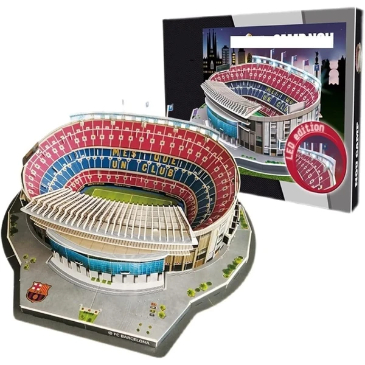

✨ Guía especial
Puzzle 3D del Camp Nou: la maqueta del estadio del Barça
Qué incluye, versión LED y aviso por la remodelación
Qué incluye, versión LED y aviso por la remodelación
El Camp Nou es el estadio más popular de toda la categoría de puzzles 3D de fútbol, por delante incluso del Bernabéu. En esta guía te contamos qué incluye la maqueta, si merece la pena la versión con luz LED, y un aviso importante antes de comprar: el estadio real está en plena remodelación, así que conviene comprobar bien qué versión estás comprando.
La maqueta reproduce la estructura exterior del estadio con el nivel de detalle habitual en este tipo de réplicas: gradas, fachada y accesos principales reconocibles a simple vista. El número de piezas varía según la versión —desde modelos más compactos hasta réplicas de mayor tamaño y detalle—, así que conviene revisar la ficha de producto antes de comprar si buscas un tamaño final concreto para exponer la maqueta terminada.
 Spotify Camp Nou
Ver en Amazon →
Spotify Camp Nou
Ver en Amazon →
Igual que ocurre con otros estadios y monumentos, el puzzle 3D del Camp Nou también tiene versión Night Edition con luz LED integrada: un pequeño circuito enciende parte de la estructura una vez montada, un efecto que en un estadio suele simular la iluminación nocturna de los focos del campo. No todas las tiendas la tienen disponible de forma constante, así que si es un requisito para ti, conviene comprobarlo bien en la ficha antes de comprar, ya que el precio sube frente a la versión estándar.

Spotify Camp Nou Led Ver en Amazon →El Camp Nou real está en pleno proceso de remodelación, lo que significa que en el mercado pueden convivir maquetas del estadio en su versión anterior y modelos ya actualizados con el nuevo diseño. Antes de comprar, conviene revisar bien las fotos y la descripción del producto —o las opiniones de otros compradores— para asegurarte de que la versión que recibes coincide con la que esperas, especialmente si es un regalo y el destinatario conoce bien cómo es el estadio actualmente.
Esta es también la razón por la que este artículo necesita revisarse con más frecuencia que la mayoría del resto de la categoría: a medida que avancen las obras, es probable que aparezcan nuevas versiones de la maqueta que conviene ir incorporando aquí.
La maqueta del Camp Nou, tanto en su versión estándar como con luz LED, se encuentra principalmente en Amazon, donde suele haber más disponibilidad constante que en tienda física.
También se encuentra en Carrefour y Juguettos, aunque con disponibilidad más limitada y sujeta a campaña —especialmente en fechas señaladas como el inicio de temporada o Navidad.
Depende de la versión y la fecha de fabricación del producto — con las obras en marcha, conviene revisar bien las fotos y opiniones de la ficha antes de comprar para asegurarte de qué versión del estadio recibes.
Sí, existe una versión Night Edition con luz LED integrada que simula la iluminación nocturna del estadio, aunque no siempre está disponible de forma constante en todas las tiendas.
Principalmente en Amazon, con la disponibilidad más constante. También en Carrefour y Juguettos, sujeto a campaña.
Varía según la versión — desde modelos más compactos hasta réplicas de mayor tamaño y detalle. Conviene revisar la ficha de producto si buscas un tamaño final concreto.
Todos los tipos, materiales, marcas y modelos según la edad.